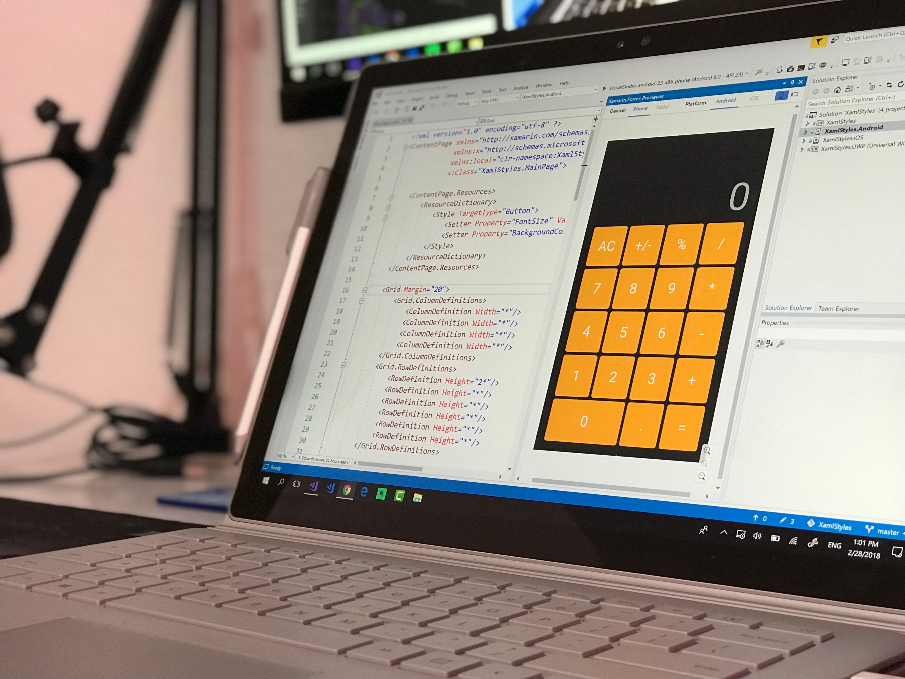

Why Learning Web Development is One of the Best Skills You Can Learn
By Ugboaja Chidera Promise | June 25, 2026
image credit; pexel
Introduction
In today's digital world, websites play an important role in education, business, entertainment, and communication. Every day, millions of people visit websites to shop, learn new skills, connect with others, and access important services. Behind these websites are web developers who bring ideas to life through code.
Learning web development is more than just learning how to build websites. It is a valuable skill that encourages creativity, problem-solving, and continuous learning. Whether you want to become a professional developer, start a business, or simply understand how the internet works, web development provides opportunities that can shape your future.
Web Development Opens Career Opportunities
image credit; pexel
As businesses continue to move online, the demand for skilled web developers continues to grow. Companies, organizations, schools, and entrepreneurs all need websites to reach their audiences.
Learning web development can lead to careers such as front-end development, back-end development,full-stack development , website maintenance, and freelance web design. It also allows people to work remotely and collaborate with clients from different parts of the world.
Web Development Encourages Creativity and Problem-Solving

image credit; pexel
Building a website is like solving a puzzle. Developers combine text, images, colors, layouts, and interactive features to create useful and attractive experiences for users.
Every project presents new challenges, helping developers improve their analytical thinking and creativity. Even a simple webpage requires planning, organization, and attention to detail, making web development an excellent skill for continuous personal growth.
Essential Skills Every Beginner Should Learn

image credit; clipartmax
- HTML - provides the structure of a webpage (its like the skeleton of a webpage).
- CSS - controls the design and appearance (its for styling).
- JAVASCRIPT - adds interactivity and dynamic features.
Conclusion
Web development is one of the most practical and rewarding skills anyone can learn today. It combines creativity with technical knowledge and opens doors to countless career and business opportunities. Although becoming a skilled developer requires patience and consistent practice, every project completed brings valuable experience and confidence.
Whether your goal is to build personal projects, work for a company, or become a freelancer, learning web development is an investment that can benefit you for many years.
Read More
Interested in learning web development? Explore beginner-friendly resources like W3Schools, MDN Web Docs, and freeCodeCamp to continue your learning journey